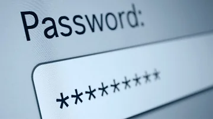

Um guia para a
Segurança online
Um Guia para a Segurança Online:
Golpes e Fraudes Digitais
Reconhecendo um golpe
-
Desconfie de mensagens ou ligações que solicitam informações
pessoais, como senhas, números
de cartão de crédito, ou dados bancários.
-
Verifique o remetente de e-mails ou mensagens para se certificar
de que são legítimos.
-
Esteja atento a ofertas que parecem boas demais para ser verdade.
-
Fique alerta a solicitações urgentes de pagamento ou pressão para
tomar uma decisão rápida.
Protegendo-se de golpes
-
Mantenha seus dispositivos e softwares atualizados com as versões
mais recentes de segurança.
- Utilize senhas fortes e únicas para cada conta online.
-
Nunca compartilhe informações pessoais em sites não confiáveis.
-
Esteja ciente das configurações de privacidade nas redes sociais e
limite a quantidade de informações pessoais compartilhadas.
O que fazer se você caiu em um golpe
-
Contate imediatamente seu banco ou instituição financeira para
relatar o incidente.
- Altere todas as senhas das suas contas online.
-
Registre uma ocorrência na delegacia de polícia mais próxima.
-
Informe outros familiares e amigos sobre o ocorrido para evitar
que eles também caiam no mesmo golpe.
Golpe do Pix, saiba como se proteger
Os 8 golpes mais aplicados
Um Guia para a Segurança Online:
Senhas
A importância de senhas seguras
-
Utilizar senhas seguras é essencial para proteger suas informações
pessoais online e offline.
-
Senhas fracas podem ser facilmente adivinhadas, comprometendo a
segurança da sua conta ou do seu cartão físico.
-
Senhas seguras ajudam a prevenir o acesso não autorizado às suas
informações confidenciais.
Criando senhas fortes
-
Utilize uma combinação de letras maiúsculas e minúsculas, números
e caracteres especiais para criar senhas fortes.
-
Evite utilizar informações pessoais óbvias, como seu nome, data de
nascimento ou números de telefone.
- Crie senhas longas, com pelo menos 8 caracteres.
-
Para senhas de cartões físicos, evite sequências óbvias (como
1234) ou números relacionados a informações pessoais.
Gerenciando suas senhas de sites/bancos e aplicativos
-
Utilize um gerenciador de senhas confiável para armazenar suas
senhas de forma segura.
-
Evite anotar senhas em pedaços de papel ou salvá-las em documentos
não protegidos.
- Nunca compartilhe suas senhas com outras pessoas.
-
Considere ativar a autenticação em dois fatores sempre que
possível para adicionar uma camada extra de segurança.
Gerenciando senhas de cartões físicos
-
Memorize suas senhas de cartões físicos e evite escrevê-las em
algum lugar acessível.
-
Proteja seu cartão físico em um local seguro e evite
compartilhá-lo com outras pessoas.
-
Ao usar seu cartão em locais públicos, proteja o teclado ao
digitar sua senha para evitar a visualização por terceiros.
Trocando senhas regularmente
-
Troque suas senhas regularmente, a cada 3-6 meses, para garantir a
segurança contínua.
- Evite reutilizar senhas antigas ao criar novas.
-
Ao receber um aviso de possível violação de dados, altere
imediatamente a senha correspondente.

Aprenda a proteger suas senhas

Os melhores gerenciadores de senhas
Um Guia para a Segurança Online:
Cuidados com as redes sociais
Importância de não se expor tanto
-
Compartilhar informações pessoais nas redes sociais pode expor
você a riscos de privacidade e segurança.
-
Informações sensíveis podem ser utilizadas por pessoas
mal-intencionadas para golpes ou fraudes.
-
Expor demais sua vida pessoal nas redes sociais pode afetar sua
reputação online e até mesmo offline.
Configurando a privacidade nas redes sociais
-
Verifique as configurações de privacidade das suas contas nas
redes sociais.
-
Limite o acesso às suas informações pessoais apenas para amigos ou
pessoas confiáveis.
-
Evite fornecer informações como endereço residencial, número de
telefone ou detalhes de viagens publicamente.
-
Cuidado ao aceitar solicitações de amizade de pessoas
desconhecidas.
Compartilhando com responsabilidade
-
Pense duas vezes antes de compartilhar informações pessoais
sensíveis nas redes sociais.
-
Evite compartilhar sua rotina diária, horários ou detalhes
específicos sobre sua vida pessoal.
-
Esteja atento ao conteúdo que você compartilha, pois pode ter um
impacto duradouro.
-
Evite postar fotos comprometedoras ou que possam ser mal
interpretadas.
Protegendo-se de perfis falsos e golpes
-
Verifique cuidadosamente os perfis antes de aceitar solicitações
de amizade.
-
Desconfie de mensagens suspeitas de pessoas desconhecidas que
solicitam informações pessoais.
-
Não clique em links suspeitos ou compartilhe informações
confidenciais através de mensagens privadas.
-
Denuncie perfis falsos ou suspeitos às plataformas das redes
sociais.
Dicas para não se expor nas redes sociais